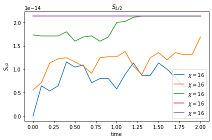

Quench dynamics in the MBL phase
$\require{physics}$
from copy import deepcopy
import numpy as np
import pandas as pd
from scipy.linalg import expm
import matplotlib.pyplot as plt
%matplotlib inline
from ph121c_lxvm import tensor, measure
Summary
We will again evolve this quantum state \begin{align} \ket{\psi(t=0)} = \ket{\xi} \otimes \cdots \otimes \ket{\xi} , \end{align} where $\ket{\xi} = \frac{1}{2} \left( \ket{\uparrow} - \sqrt{3} \ket{\downarrow} \right)$.
# Build initial state
down = np.array([1., 0.]).reshape(2, 1)
up = down[::-1].reshape((2, 1))
ξ = (up - np.sqrt(3) * down) / 2
def make_wave (L, d):
"""Create the inital wavefunctions."""
ψ = tensor.mps(L=L, d=d)
ψ.from_arr([ ξ for _ in range(L) ], center=-1)
return ψ
Measuring the half-system entanglement entropy:
def eentropy (tren, i):
"""Calculate the entanglement entropy at a cut between quanta i, i+1."""
tren.groupby_quanta_tag([i])
u, s, vh = np.linalg.svd(tren.center.mat)
return measure.entropy.entanglement(s)
We will use the following TFIM Hamiltonian with open boundary conditions parametrized by random coefficients $h_i^x, h_i^z \sim U(-W, W)$: $$ H = -\sum_{i=1}^{L-1} \sigma_i^z \sigma_{i+1}^z -\sum_{i=1}^L h_i^x \sigma_i^x -\sum_{i=1}^L h_i^z \sigma_i^z . $$
sx = np.array([[0, 1], [1, 0]])
sy = np.array([[0, -1j], [1j, 0]])
sz = np.diag([1, -1])
# Build pieces of Hamiltonian in gate representation
def build_pieces_of_H (L, d, W, seed):
"""Build the field, odd, and even term Hamiltonians and also their union."""
rng = np.random.default_rng(seed=seed)
H_field = np.empty(L, dtype='O')
for i in range(H_field.size):
H_field[i] = tensor.mpo(L=L, d=d)
H_field[i].set_local_oper(
-(rng.uniform(-W, W) * sx + rng.uniform(-W, W) * sz), i + 1
)
H_odd = np.empty(L//2, dtype='O')
for i in range(H_odd.size):
H_odd[i] = tensor.mpo(L=L, d=d)
H_odd[i].set_local_oper(-sz, 2*i + 1)
H_odd[i].set_local_oper(sz, 2*i + 1 + 1)
H_even = np.empty(L//2 - 1 + L%2, dtype='O')
for i in range(H_even.size):
H_even[i] = tensor.mpo(L=L, d=d)
H_even[i].set_local_oper(-sz, 2*(i + 1))
H_even[i].set_local_oper(sz, 2*(i + 1) + 1)
H_full = np.array([*H_field, *H_odd, *H_even], dtype='O')
return (H_field, H_odd, H_even, H_full)
# Construct propagators
def build_propagators (L, d, δτ, H_field, H_odd, H_even):
"""Exponentiate each non-commuting piece of the Hamiltonian"""
U_field = tensor.mpo(L=L, d=d)
for i, e in enumerate(H_field):
U_field.set_local_oper(expm(- 1.j * δτ * e[0].mat), i+1)
U_odd = tensor.mpo(L=L, d=d)
for i, e in enumerate(H_odd):
U_odd.set_local_oper(
expm(- 1.j * δτ * np.kron(e[1].mat, e[0].mat)),
2 * i + 1
)
U_even = tensor.mpo(L=L, d=d)
for i, e in enumerate(H_even):
U_even.set_local_oper(
expm(- 1.j * δτ * np.kron(e[1].mat, e[0].mat)),
2 * (i + 1)
)
return (U_field, U_odd, U_even)
def make_observables (L, d):
"""Create the observable operators of interest."""
s1x = tensor.mpo(L=L, d=d)
s1x.set_local_oper(sx, 1)
sL2x = tensor.mpo(L=L, d=d)
sL2x.set_local_oper(sx, L//2)
s1z = tensor.mpo(L=L, d=d)
s1z.set_local_oper(sz, 1)
sL2z = tensor.mpo(L=L, d=d)
sL2z.set_local_oper(sz, L//2)
return (s1x, sL2x, s1z, sL2z)
Evolution
We will evolve the state in real time and measure the entanglement entropy at each time step. The goal is to observe the MBL physics of this Hamiltonian through the logarithmic growth of the entanglement entropy.
W = 3
L = 24
d = 2
δτ = 0.1
N = 20
seeds = [935, 483, 102, 567, 304]
%%time
chi = 16
Nstp = 20
ψ = make_wave(L=L, d=d)
ψ_results = dict(t=[], S=[], s1x=[], sL2x=[], s1z=[], sL2z=[], seed=[])
for seed in seeds:
H_field, H_odd, H_even, H_full = build_pieces_of_H(
L=L, d=d, W=W, seed=seed
)
U_field, U_odd, U_even = build_propagators(
L=L, d=d, δτ=δτ, H_field=H_field, H_odd=H_odd, H_even=H_even
)
wave = deepcopy(ψ)
s1x, sL2x, s1z, sL2z = make_observables(L=L, d=d)
ψ_results['t'].append(0)
ψ_results['seed'].append(seed)
ψ_results['S'].append(eentropy(ψ, L//2))
ψ_results['s1x'].append(s1x.expval(ψ))
ψ_results['sL2x'].append(sL2x.expval(ψ))
ψ_results['s1z'].append(s1z.expval(ψ))
ψ_results['sL2z'].append(sL2z.expval(ψ))
# TEBD pattern
for i in range(N):
for e in [U_field, U_even, U_odd]:
e.oper(wave, inplace=True)
wave.trim_bonds(chi)
wave.normalize()
# measure entropy
ψ_results['t'].append(δτ * (i + 1))
ψ_results['seed'].append(seed)
ψ_results['S'].append(eentropy(ψ, L//2))
ψ_results['s1x'].append(s1x.expval(ψ))
ψ_results['sL2x'].append(sL2x.expval(ψ))
ψ_results['s1z'].append(s1z.expval(ψ))
ψ_results['sL2z'].append(sL2z.expval(ψ))
CPU times: user 34min 22s, sys: 24.4 s, total: 34min 46s
Wall time: 6min 15s
Plots
Here we will plot the entanglement entropy as a function of time for all the disorder realizations.
df = pd.DataFrame(ψ_results)
fig, ax = plt.subplots()
# grp = df.groupby(['L', 't']).mean().reset_index()
for k, seed in enumerate(seeds):
which = (df.seed == seed)
ax.plot(
df.t[which].values, df.S[which].values,
label=f'$\\chi={chi}$'
)
grp = df.groupby(['t']).mean().reset_index()
# ax.plot(np.arange(N) * δτ, np.mean(df.S))
ax.set_title('$S_{L/2}$')
ax.set_xlabel('time')
ax.set_ylabel('$S_{L/2}$')
ax.legend()
fig.tight_layout()
plt.show()

Compared to the previous Hamiltonian, the entropy here does not spike, but steadily increases, which seems to be the signature of the MBL phase.
I have plotted 5 disorder realizations and believe that it’s not too hard to imagine the average.
I also got some data of the observables, but I am about to fall asleep, so instead here are the values averaged over the disorder realizations:
grp
| t | S | s1x | sL2x | s1z | sL2z | seed | |
|---|---|---|---|---|---|---|---|
| 0 | 0.0 | 1.310063e-14 | -0.866025 | -0.866025 | 0.5 | 0.5 | 478.2 |
| 1 | 0.1 | 1.465494e-14 | -0.866025 | -0.866025 | 0.5 | 0.5 | 478.2 |
| 2 | 0.2 | 1.527667e-14 | -0.866025 | -0.866025 | 0.5 | 0.5 | 478.2 |
| 3 | 0.3 | 1.567635e-14 | -0.866025 | -0.866025 | 0.5 | 0.5 | 478.2 |
| 4 | 0.4 | 1.691980e-14 | -0.866025 | -0.866025 | 0.5 | 0.5 | 478.2 |
| 5 | 0.5 | 1.612044e-14 | -0.866025 | -0.866025 | 0.5 | 0.5 | 478.2 |
| 6 | 0.6 | 1.620926e-14 | -0.866025 | -0.866025 | 0.5 | 0.5 | 478.2 |
| 7 | 0.7 | 1.518785e-14 | -0.866025 | -0.866025 | 0.5 | 0.5 | 478.2 |
| 8 | 0.8 | 1.580958e-14 | -0.866025 | -0.866025 | 0.5 | 0.5 | 478.2 |
| 9 | 0.9 | 1.603162e-14 | -0.866025 | -0.866025 | 0.5 | 0.5 | 478.2 |
| 10 | 1.0 | 1.620926e-14 | -0.866025 | -0.866025 | 0.5 | 0.5 | 478.2 |
| 11 | 1.1 | 1.709743e-14 | -0.866025 | -0.866025 | 0.5 | 0.5 | 478.2 |
| 12 | 1.2 | 1.714184e-14 | -0.866025 | -0.866025 | 0.5 | 0.5 | 478.2 |
| 13 | 1.3 | 1.629807e-14 | -0.866025 | -0.866025 | 0.5 | 0.5 | 478.2 |
| 14 | 1.4 | 1.700862e-14 | -0.866025 | -0.866025 | 0.5 | 0.5 | 478.2 |
| 15 | 1.5 | 1.776357e-14 | -0.866025 | -0.866025 | 0.5 | 0.5 | 478.2 |
| 16 | 1.6 | 1.718625e-14 | -0.866025 | -0.866025 | 0.5 | 0.5 | 478.2 |
| 17 | 1.7 | 1.714184e-14 | -0.866025 | -0.866025 | 0.5 | 0.5 | 478.2 |
| 18 | 1.8 | 1.665335e-14 | -0.866025 | -0.866025 | 0.5 | 0.5 | 478.2 |
| 19 | 1.9 | 1.665335e-14 | -0.866025 | -0.866025 | 0.5 | 0.5 | 478.2 |
| 20 | 2.0 | 1.749711e-14 | -0.866025 | -0.866025 | 0.5 | 0.5 | 478.2 |